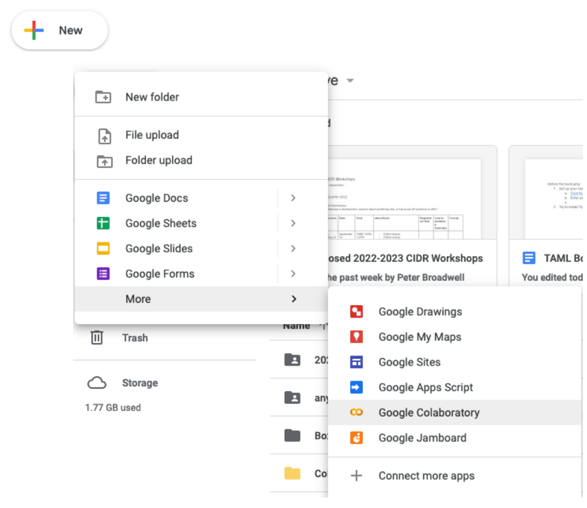
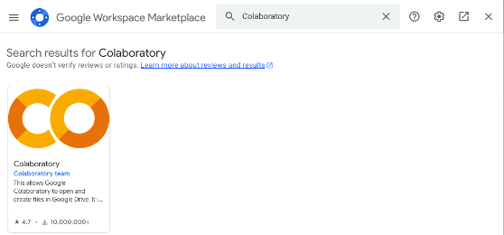
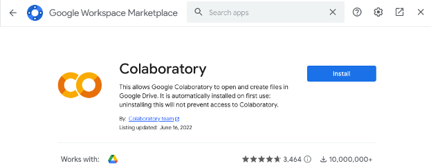
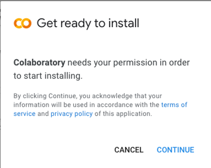
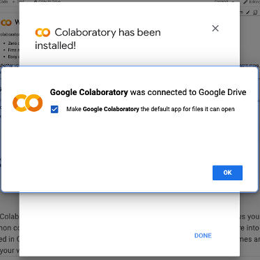
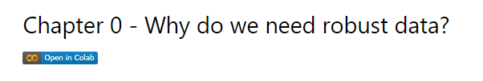
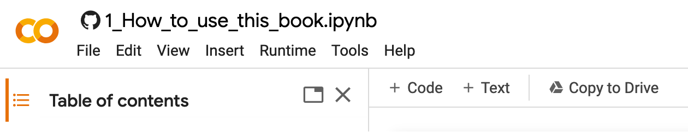
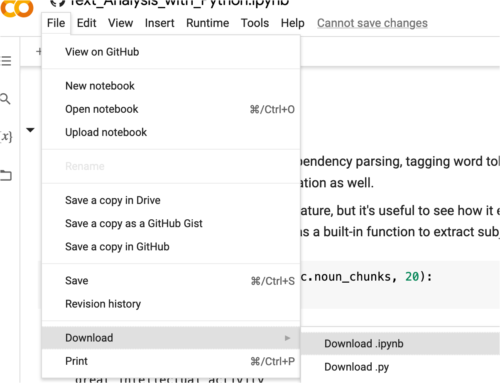

Preface: How to use this book
Contents
Preface: How to use this book#
This book provides a reference for the exercises and code we present and discuss in the Understanding Messy Time Series Data workshop. While you can actually run the code in the book itself (although it might take a while to load - see below), think of this book as the single point to access the content, conceptual introductions, vocabulary terms, and code.
Book layout#
This book’s layout is divided into three sections: (1) center portion, (2) left sidebar, and (3) right sidebar.
The center portion contains the main text. Here, goals, concepts, vocabulary, objectives, and code will be presented and explained.
The left sidebar shows the table of contents. Use the
left and right arrow keysto browse the different chapters.The right sidebar contains clickable section headers for the chapter you are currently viewing. Use the
up and down arrow keysto scroll the page.
Jupyter icons#
Notice the icons at the top of each page.
The rocketship icon appears on pages with executable code. Hover your mouse over it and click “Binder” to launch all of the materials there in a Jupyter Lab on Binder. Or, click “Live Code” to be able to run the code on the webpage, although this might take a long time to load!
Click the square icon to enter fullscreen mode. Press the escape key to exit.
Move your mouse over the Octocat icon. Click “Repository” to visit the GitHub site. Or, click “Open Issue” to contribute to this book.
The download icon can be used to download this book.
On the top-left of the page, click the three lines icon (toggle navigation) to hide the left sidebar.
Workshop format#
SSDS’s GearUp workshop consists of a single 2-hour session, divided into the following sections:
Lecture overviews of various lengths that introduce concepts, vocabulary and code examples.
A short break.
Time to review and discuss material collaboratively.
Chapters components include:
Chapter previews (e.g., learning objectives, installation prerequisites).
Discussion texts (numbered in suggested order).
Coding demonstrations.
Not all of the material present in the book may be presented in the workshop, so feel free to explore the book more when you have the time! Sharing the book is encouraged as well.
Python environments#
There are many interfaces through which we can interact with and run the workshop coding examples, including:
Google Colab
Jupyter Lab via Binder
Local Anaconda environment
Text editor
All of these interfaces can work, and no single one is strictly better than another. However, for the purposes of the workshop presentation, we will be using Google Colab due to its ease of use and quick start-up time. Prior to the workshop, please see the following instructions to set up your Colab environment:
Installing Google Colab#
Start by installing the extension to your Stanford Google Drive account.
Click here to visit the Google Colab sign in page
Enter your SUNet email address on the “Choose an account” screen
Click “My Drive”
Click the “+New” button and select “Google Colaboratory”

5. If you do not see this option, click “+ Connect more apps” and search for Colaboratory and the icon will appear:

6. Click the brown and orange Colaboratory icon and click “Install:”

7. Click “Continue” and select your stanford.edu account if prompted:

8. You will see that Colaboratory was successfully installed/connected to Google Drive when finished. Click “OK” and “Done” to complete the installation and close any remaining pop-up windows.

Using Google Colab#
To launch Colab, click the Colab badge at the top of each chapter in the book.

Click the Run button in the toolbar, or press shift + enter on your keyboard to execute the cell.
Colab toolbar#
Click the + Code button to add a code cell
Click the + Text button to add a text/markdown cell
Click the Menu to view the table of contents
Click the File folder to view your available files

Save your work#
Click the Copy to Drive toolbar button, or
Click “File” –> “Download” –> “Download.ipynb”

Learn more#
Check out Google Colab Tips for Power Users for shortcuts.
(*Note: this page was heavily adapted from the “How to use this book” chapter of SSDS’s Fall Quarter 2022 Text Analysis and Machine Learning Workshop - many thanks to its authors!)